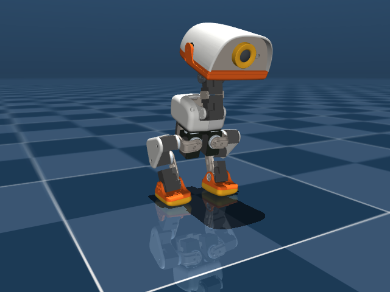
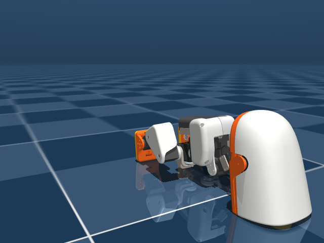

一句话：一只巴掌大（25cm）、靠"大脑"（神经网络策略）走路的双足机器鸭——不会扫地不会端茶，但会走、会滑轮、会踢球、用鸭嘴叼东西、摔倒了自己爬起来。它源自迪士尼"银河星际巡洋舰"里的 BDX 机器人，前身是开源项目 Open Duck Mini。
没有它之前怎么做？小型双足机器人要么是几千上万元的科研平台（如 Robotis OP3 约上万元），要么是不会走路的玩具。Microduck 用"游戏级舵机 + 手机级芯片 + RL 策略"把双足行走打到了整机 $399 的价位。
这是本推文评论区争论的核心（"华强北版本""淘宝 openduck 卖 7000"）。官方口径很清楚：开源的是"大脑"——全部软件栈 + 策略训练管线；硬件（BOM、CAD、装配文档）不公开。具体三块：
| 开源的部分 | 仓库 / 位置 | 含金量 |
|---|---|---|
| 机器人"大脑"（23 个 Rust crate） | pollen-robotics/microduck | 生产级守护进程架构 + 50Hz 控制 + ONNX 策略加载 + OTA 更新系统 |
| 策略训练（MuJoCo + PPO + sim2real） | pollen-robotics/microduck_rl | 完整物理模型（86 个 STL 网格）、训练场景、域随机化、ONNX 导出 |
| 策略分发契约（manifest schema 2） | docs/policy-manifest.md | 社区人人可发布自己的策略，机器人直接 load |
推文后续更有意思：Geek Lite 又发推指出，开发者 fanhao375 拿官方公开的 MJCF 和 47 个 STL 反推出了整套装配图、CAD 装配体和电控方案并开源——硬件闭源挡不住社区逆向。国内还有 ZeroTau（陆吾智能）的"低成本复刻方案"和义乌版 YIduck。
守护进程（daemon）：在后台常驻运行、提供持续服务的程序。Microduck 的板子（Rockchip RK3566）上跑 7 个，各管一摊，用 Unix socket 上的 JSON-RPC（一种"一行一个 JSON 请求"的进程间通话协议）互相对话：
游戏手柄(BLE/USB) 手机(BLE) 你(ssh) 远程(WebRTC) GitHub发布
│ │ │ │ │
padd btd robotctl mediad updaterd
└────── 统一走：每服务一个 unix socket · JSON-RPC 2.0 ──────┘
│ │ │
robotd configd updaterd
50Hz控制环 wifi/名字 签名验证/换版本
安全层/策略 手柄配对 健康门/自动回滚
唯一能碰舵机者
│
15 舵机 + IMU（一条串口总线）
三个设计理由，每条都值得抄走：
核心是 sim2real：在仿真里训练，在真机上运行。四步流水线（全在 microduck_rl 仓库）：
社区玩法：策略清单（policy manifest）schema 2 定义了 kind（episodic 定时返回安全姿势 / perpetual 一直跑的步态 / scripted 中途可改指令）和 command.encoding（constant 固定指令 / phase 相位驱动），任何人训好一个鸭子技能，发布到 Hugging Face，一条 robotctl policy load 就能装进自己的鸭子。
好问题——我们直接做实验回答（见第二节实验 2/3）。实测结论：位置伺服把关节锁成"标准站姿"，鸭子 0.4~1 秒内照样慢慢瘫下去；侧向推一把也是瘫。因为静态锁关节没有"动态平衡"：真人站立时脚踝也在毫秒级微调重心，RL 策略就是学会了这套毫秒级微调的神经网络。定值控制能延缓倒塌，只有策略能真正站住、走起来。
仓库里其实有两份 MJCF，用途完全不同：
| kinematics 内嵌版（robot_walk.xml） | 训练仓库版（scene.xml） | |
|---|---|---|
| 内容 | 只有运动链：15 关节（1 自由关节+14 铰链）+ 16 刚体 + 惯量 + 8 个 site 标记点 | 完整物理世界：+ 86 STL 网格 + 82 碰撞体 + 地板 + 14 个位置伺服 + INIT/STAND/SIT/FOLD 关键帧 |
| 执行器 | 0 个 | 14 个 |
| 用途 | 给 robotd 的 kinematics crate 算前向运动学（FK） | 给 RL 训练当"物理考场" |
实验 1 实锤：把 kinematics 版丢进 MuJoCo 一松手，0.24 秒掉了 0.285 米——精确等于自由落体。它连地板都没有！这教了 sim2real 第一课：模型文件只描述鸭子本身，"世界"（地板、摩擦、接触）是训练场景额外给的。
前向运动学（FK）：已知所有关节角度，算出脚/头等部位在空间中的位置。robotd 每秒 50 次都要问"两只脚现在在哪"（算里程计），但 MuJoCo 整个引擎是为仿真设计的，太重。于是官方用 Rust 写了个迷你 FK：启动时把 MJCF"编译"成每条 site 的固定变换链，之后每次查询就是一次链式折叠——不查哈希表、不分配内存。正确性靠测试钉死：fk_against_mujoco.rs 用 64 个随机姿态和 MuJoCo 官方结果逐点比对。我们在 Python 里手写了同样的 FK 对拍：64 姿态 × 4 个部位，最大误差 1.8×10⁻⁷ 米（0.18 微米）——这份运动链数学是硬的。
OTA：Over-The-Air，无线固件升级。updaterd 的流程：新版本作为完整目录下载到 releases/<版本号>/ → 验证签名 → 把 current 软链接切过去 → 重启服务 → 健康门（问 robotd "你还好吗"）→ 不健康就自动把旧版换回来（回滚），连重启次数都有 boot counter 兜底防崩溃循环。思想跟蓝绿发布一模一样：发布是切换不是修改，出错永远有退路——一个 $399 的玩具鸭子用了比很多大厂还规矩的发布纪律。
评论区说的淘宝 openduck 是同一开源生态的整机商品（约 ¥7000+，比官方便宜版还贵）。华强北版的可行性：软件全开源 + 装配图已被社区反推（fanhao375）+ 国产舵机平替方案（ZeroTau）在推进，所以"能复刻"这件事基本没有悬念；悬念在成本与调试——15 个总线舵机、RK3566 板、IMU/ToF 模组，外加 RL 策略的 sim2real 调参。推文里"得生产的人多了才能卷下去"正是关键：开源生态降低了复刻的知识门槛，规模才能降成本门槛。
实验素材：官方训练物理模型（microduck_rl 的 scene.xml）+ 官方 kinematics 运动链（microduck 内嵌 MJCF）+ MuJoCo 3.14。完整脚本：microduck\exercise\sim_duck.py 与 render_duck.py。
操作：python sim_duck.py（环境：Python 3.14 + pip install mujoco）
目的：搞清官方模型的数据构成。实现：用 MuJoCo 解析 kinematics 内嵌 MJCF 并统计。
操作/目的：把模型放在 12cm 高度松手，验证"没有场景就没有世界"。每步 1ms 跑 240 步。
操作：加载完整物理场景 scene.xml，分别用官方 INIT（直立）和 STAND（屈膝站姿）关键帧 + 自带位置伺服跑 3 秒。目的：验证"不用 RL，普通控制行不行"。
操作：STAND 姿态跑仿真，t=1s 时给身体 0.8 m/s 的侧向速度冲量。实现：直接改写 freejoint 的横向速度分量。
操作：用纯 Python（四元数乘法 + 沿运动链折叠变换）独立实现前向运动学，在 64 个随机姿态下与 MuJoCo 官方 mj_kinematics 逐点比对 4 个部位（left_foot / right_foot / imu / imu_bno）。目的：亲手验证 microduck kinematics crate 的核心数学（镜像上游测试 fk_against_mujoco.rs 的思路）。
操作：python render_duck.py（MuJoCo Renderer + 官方 86 个 STL 网格，STAND 关键帧）。实现：仿真 0.5s 后取景渲染；再跑满 3s 渲染瘫倒对比图。


scripts/duck-sim（Linux 下仿真鸭子跑真守护进程）。robotctl policy load，社区技能像 App 一样装进鸭子——机器人版的 MCP 生态。Microduck = 一只"卖硬件、送大脑"的机器鸭：$399 买舵机和板子，而真正让它站起来的秘密——守护进程架构、RL 训练管线、策略分发契约——全部开源。它证明了 2026 年做机器人 waypoints：硬件可以闭源卖钱，护城河却在软件与 sim2real 管线；而开源的大脑一旦配合社区反推的硬件，"华强北版本"就从玩笑变成了时间表问题。无真机能学到的部分（架构 + 仿真 + FK 数学 + 训练管线）已经足够一个工科毕业生啃上好几周，本次 5 组实验全部实测跑通。
本指南对应推文：x.com/QingQ77（Geek Lite）"开源机器鸭，想要一个华强北版本" · 仓库 github.com/pollen-robotics/microduck（v0.15.1）与 microduck_rl · 实验脚本 F:\reminder\microduck\exercise\ · 学习产出 2026-10-02